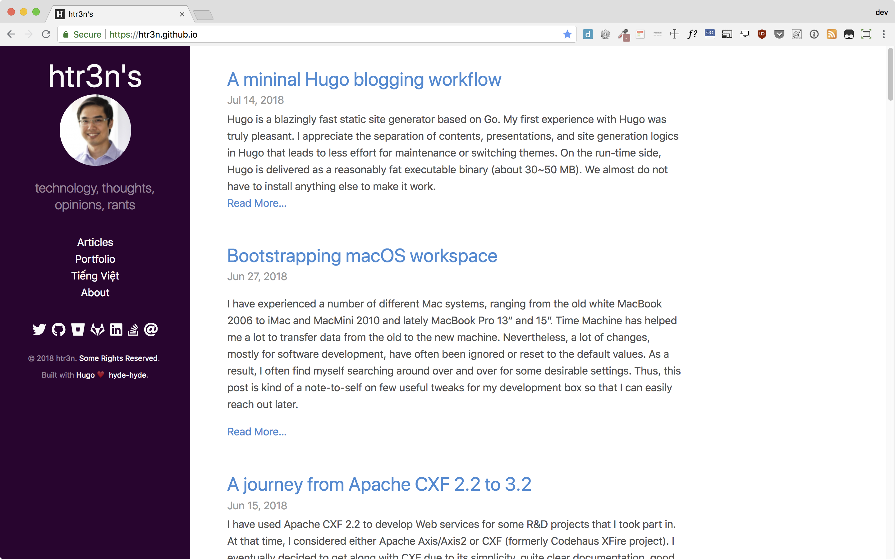

A simple and cool Hugo theme

Hyde-hyde is a responsive Hugo theme inspired by @spf13’s Hyde and its variant Nate Finch’s blog. It was heavily restructured with modularised page layouts for easier maintenance and modification. Hyde-hyde offers awesome features such as nice colour tone, code highlighting, Font-Awesome 5’s sidebar icons), a cool portfolio page, more choices for commenting (e.g. GraphComment, Disqus).